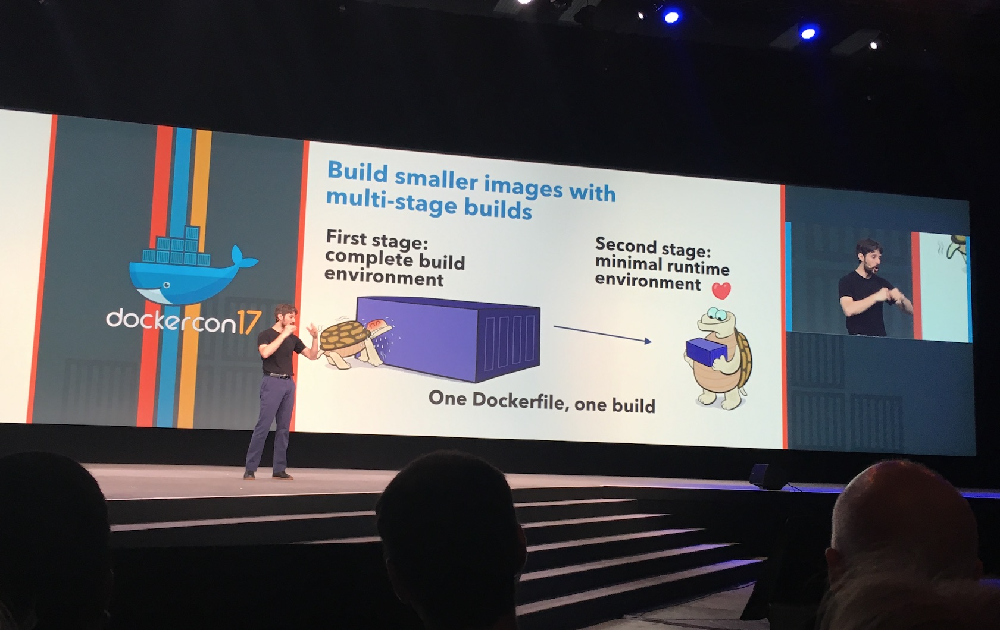

I'm still here in Austin, TX at DockerCon 2017 and I want to show you one of the announcements that is very useful to build small Windows Docker images.
On Tuesday's first keynote at DockerCon Solomon Hykes introduced the most impressive feature for me that will make it in version 17.05.0 of Docker: The multi-stage builds

The demo in the keynote only showed Linux images, but you can use this feature for Windows images as well.
How did we build smaller images in the past?
As we know each instruction in a Dockerfile like COPY or RUN builds a new layer of the image. So everything you do in eg. a RUN instruction is atomic and saved into one layer. It was a common practise to use multi-line RUN instructions to clean up temporary files and cache folders before that instruction ends to minimize the size of that layer.
For me it always looked like a workaround and a little too technical to know where all these temporary files have to be wiped out. So it is great to remove this noise out of your Dockerfiles.
And another workaround that was used in addition was to create two Dockerfiles and a script to simulate such stages and copy files from the first Docker image back to the host and then into the second Docker image. This could lead to errors if you have old temp folders on your host where you copy the results from the first build in. So it will be good that we can remove this complexity and avoid such build scripts entirely.
Multi-stage build on Windows
The idea behind multi-stage builds is that you can define two or more build stages and only the layers of the last stage gets into the final Docker image.
The first stage
As you can see in the nice slide you can start with a first stage and do what you like in there. Maybe you need a complete build environment like MSBuild, or the Golang compiler or dev dependencies to run Node.js tests with your sources.
The FROM instruction now can be followed by a stage name, eg. build. I recommend to introduce that to your Dockefile as we will need this name later again. This is how your Dockerfile then could look like:
FROM microsoft/windowsservercore as build
You do not need to use multi-line RUN instructions any more if you haven't liked it. Just keep your Dockerfile simple, readable and maintainable by your team colleages. The advantage that even you have is that you can use the Docker build cache much better.
Think of a giant multi-line RUN instruction with three big downloads, uncompress and cleanup steps and the third download crashes due to internet connectivity. Then you have to do all the other downloads again if you start the docker build again.
So relax and just download one file per RUN instruction, even put the uncompress into another RUN layer, it doesn't matter for the final image size.
The last stage
The magic comes into the Dockerfile as you can use more than one FROM instructions. Each FROM starts a new build stage and all lines beginning from the last FROM will make it into the final Docker image. The last stage does not need to have a name like the previous ones.
In this last stage you define the minimal runtime environment for your containerised application.
The COPY instruction now has a new option --from where you can specify from with stage you want to copy files or directories into the current stage.
Enough theory. Let's have a look at some real use-cases I already tried out.
Build a Golang program
A simple multi-stage Dockerfile to build a Golang binary from source could look like this:
FROM golang:nanoserver as gobuild
COPY . /code
WORKDIR /code
RUN go build webserver.go
FROM microsoft/nanoserver
COPY --from=gobuild /code/webserver.exe /webserver.exe
EXPOSE 8080
CMD ["\\webserver.exe"]
The first four lines describe the normal build. We copy the source codes into the Golang build environment and build the Windows binary with it.
Then with the second FROM instruction we choose an empty NanoServer image. With this we skip about 100 MByte of compressed Golang build environment images for the production image.
The COPY --from=gobuild instruction copies the final Windows binary from the gobuild stage into the final stage.
The last two lines are just the normal things you do, expose the port on which your app is listening and describing the command that should be called when running a container with it.
This Dockerfile now can be easily be built as always with
docker build -t webserver .
The final Docker image only has a 2 MByte compressed layer in addition to the NanoServer base layers.
You can find a full example for such a simple Golang webserver in my dockerfiles-windows repo, the final Docker Hub image is available at stefanscherer/whoami:windows-amd64-1.2.0.
Install MongoDB MSI in NanoServer
Another example for this multi-stage build is that you can use it to install MSI packages and put the installed programs and files into a NanoServer image.
Well, you cannot install MSI packages in NanoServer directly, but you can start with the Windows Server Core image in the build stage and then switch to NanoServer in the final stage.
If you know where the software has been installed you can COPY deploy them in the final stage into the image.
The Dockerfile how to build a MongoDB NanoServer image is also available on GitHub.
The first stage more or less looks like this:
FROM microsoft/windowsservercore as msi
RUN "download MSI page"
RUN "check SHA sum of download"
RUN "run MSI installer"
and the final stage looks like this:
FROM microsoft/nanoserver
COPY --from=msi C:\mongodb\ C:\mongodb\
...
RUN "put MongoDB binaries into PATH"
VOLUME C:\data\db
EXPOSE 27017
CMD ["mongod.exe"]
Another pro tip: If you really want small Windows Docker images you should also avoid RUN or ENV instructions in the last stage.
The final MongoDB NanoServer image is available at stefanscherer/mongo-windows:3.4.2-nano.
Conclusion
With multi-stage builds coming into Docker 17.05 we will be able to
- put all build stages into a single Dockerfile to use only one simple
docker buildcommand - use the build cache by using single line
RUNinstructions - start with ServerCore, then switch to NanoServer
- use latest NanoServer image with all security updates installed for the last stage even if upstream build layer may be out of date
This gives you an idea what you will be able to do once you have Docker 17.05 or later installed.
I build all my dockerfiles-windows Windows Docker images with AppVeyor and it is very easy to upgrade to Docker 17.05.0-ce during the build with the script update-docker-ce.ps1. For local Windows Server 2016 VM's you could use this script as well. Sure, at the moment we have to switch from EE to CE edition until 17.06.0-ee also will bring this feature.
Please use the comments below if you have further ideas, questions or improvements to share. You can follow me on Twitter @stefscherer.